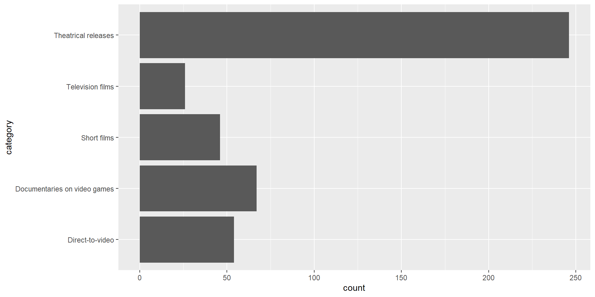
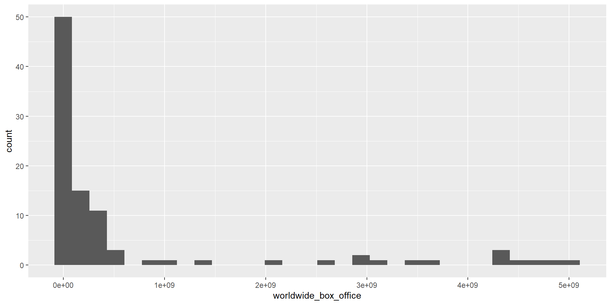
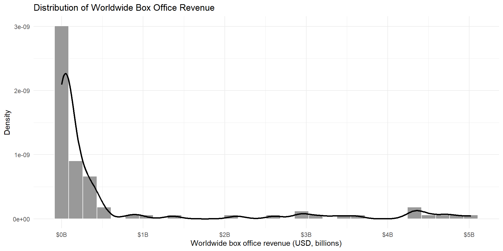
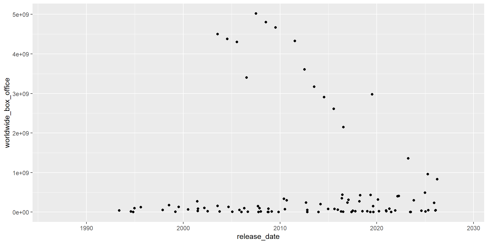
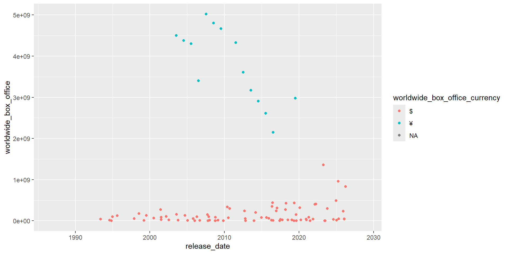
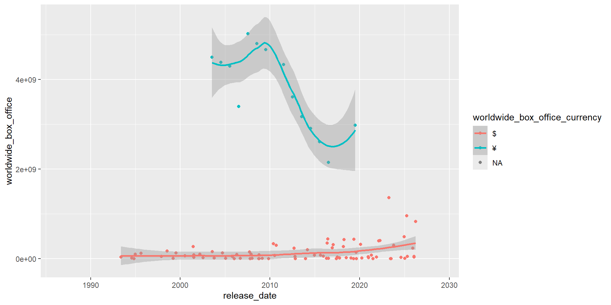
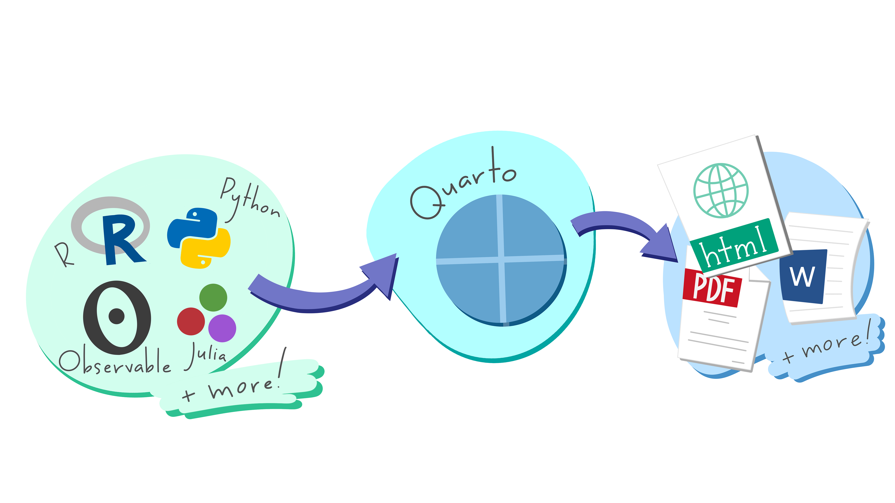
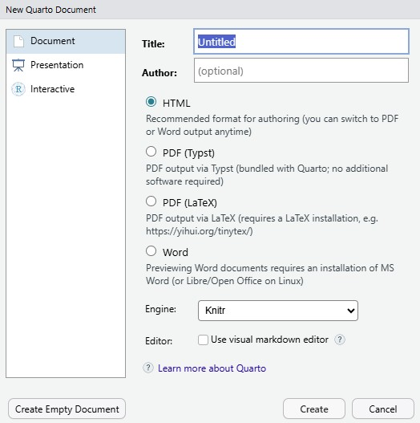

[1] 4 1 7 2 0Programming in R for statistical modeling
RFunctions perform actions for us. For example:
Most functions are stored in packages, which need to be installed and loaded before they can be used.
Ex: Data from online. The input is the link to the data
Ex: Data from the same folder as the Quarto (.qmd) document. The input is the name of the data
Ex: Data from an R package
Use head() (or tail()) to view the first (or last) 6 rows
# A tibble: 6 × 20
category subcategory title director release_date release_date_raw air_date_raw
<chr> <chr> <chr> <chr> <date> <chr> <chr>
1 Theatri… English Supe… Rocky M… 1993-05-28 May 28, 1993 <NA>
2 Theatri… English Doub… James Y… 1994-11-04 November 4, 1994 <NA>
3 Theatri… English Stre… Steven … 1994-12-23 December 23, 19… <NA>
4 Theatri… English Mort… Paul W.… 1995-08-18 August 18, 1995 <NA>
5 Theatri… English Mort… John R.… 1997-11-21 November 21, 19… <NA>
6 Theatri… English Wing… Chris R… 1999-03-12 March 12, 1999 <NA>
# ℹ 13 more variables: worldwide_box_office_currency <chr>,
# worldwide_box_office <dbl>, rotten_tomatoes <dbl>, metacritic <dbl>,
# cinema_score <chr>, distributor <chr>, original_game_publisher <chr>,
# budget_currency <chr>, budget_low <dbl>, budget_high <dbl>,
# domestic_box_office <chr>, subject <chr>, network <chr># A tibble: 6 × 20
category subcategory title director release_date release_date_raw air_date_raw
<chr> <chr> <chr> <chr> <date> <chr> <chr>
1 Documen… Other rele… Stam… Szilárd… 2022-01-01 2022 <NA>
2 Documen… Other rele… We M… Joe Hun… 2022-01-01 2022 <NA>
3 Documen… Other rele… Runn… Patrick… 2023-01-01 2023 <NA>
4 Documen… Other rele… FPS:… David L… 2023-01-01 2023 <NA>
5 Documen… Other rele… Gran… Sam Cra… 2024-01-01 2024 <NA>
6 Documen… Other rele… Geor… Brandon… 2025-01-01 2025 <NA>
# ℹ 13 more variables: worldwide_box_office_currency <chr>,
# worldwide_box_office <dbl>, rotten_tomatoes <dbl>, metacritic <dbl>,
# cinema_score <chr>, distributor <chr>, original_game_publisher <chr>,
# budget_currency <chr>, budget_low <dbl>, budget_high <dbl>,
# domestic_box_office <chr>, subject <chr>, network <chr>Use glimpse() to view column names, types, and some values
Rows: 439
Columns: 20
$ category <chr> "Theatrical releases", "Theatrical relea…
$ subcategory <chr> "English", "English", "English", "Englis…
$ title <chr> "Super Mario Bros.", "Double Dragon", "S…
$ director <chr> "Rocky Morton and Annabel Jankel", "Jame…
$ release_date <date> 1993-05-28, 1994-11-04, 1994-12-23, 199…
$ release_date_raw <chr> "May 28, 1993", "November 4, 1994", "Dec…
$ air_date_raw <chr> NA, NA, NA, NA, NA, NA, NA, NA, NA, NA, …
$ worldwide_box_office_currency <chr> "$", "$", "$", "$", "$", "$", "$", "$", …
$ worldwide_box_office <dbl> 38912465, 4152699, 99423521, 124741822, …
$ rotten_tomatoes <dbl> 29, 12, 11, 47, 4, 10, 20, 36, 24, 3, 18…
$ metacritic <dbl> 35, 40, 34, 60, 11, 21, 33, 33, 43, 15, …
$ cinema_score <chr> "B+", "F", "B-", "A-", "C+", "D", "B", "…
$ distributor <chr> "Buena Vista Pictures Distribution", "Gr…
$ original_game_publisher <chr> "Nintendo", "Technōs Japan", "Capcom", "…
$ budget_currency <chr> "$", "$", "$", "$", "$", "$", "$", "$", …
$ budget_low <dbl> 4.20e+07, 7.80e+06, 3.50e+07, 2.00e+07, …
$ budget_high <dbl> 4.80e+07, 7.80e+06, 3.50e+07, 2.00e+07, …
$ domestic_box_office <chr> NA, NA, NA, NA, NA, NA, NA, NA, NA, NA, …
$ subject <chr> NA, NA, NA, NA, NA, NA, NA, NA, NA, NA, …
$ network <chr> NA, NA, NA, NA, NA, NA, NA, NA, NA, NA, …

Prompt: Provide improvements for this plot including alt text, axis labels, and a smoothed curve. Here is my code: ggplot(game_films, aes(x = worldwide_box_office)) + geom_histogram()
ggplot(game_films, aes(x = worldwide_box_office)) +
geom_histogram(
aes(y = after_stat(density)),
bins = 30,
fill = "grey60",
color = "white"
) +
geom_density(
linewidth = 1,
adjust = 1.2
) +
scale_x_continuous(
labels = scales::label_dollar(scale = 1e-9, suffix = "B")
) +
labs(
title = "Distribution of Worldwide Box Office Revenue",
x = "Worldwide box office revenue (USD, billions)",
y = "Density",
alt = "Histogram of worldwide box office revenue for films. Most films are concentrated at the lower end of the revenue range, with a long right tail extending beyond 5 billion dollars. A smoothed density curve overlays the histogram."
) +
theme_minimal()Check that it still tells the story you wanted to deliver!




You are expected to be able to utilize your resources to develop code to compute summary statistics, produce plots, and later on to fit models.
I want you to decide what variable(s) you want to plot, and what the purpose of your plot / summary statistic is.
You can use AI to suggest pros and cons of plot types or summary statistics and to improve your plots

Artwork from ‘Hello, Quarto’ keynote by Julia Lowndes and Mine Çetinkaya-Rundel, presented at RStudio Conference 2022. Illustrated by Allison Horst.
An advantage of Quarto documents is that you can choose what type of file you want to generate.

New File > Quarto Document
The PDF (Latex) option requires an additional installation. Open RStudio and in the Console enter:
Download lab-01b.qmd and explore the game_films dataset further!
Reference:
The game_films dataset was shared by TidyTuesday and originally from Wikipedia